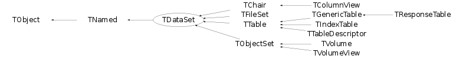

class TDataSet: public TNamed
TDataSet TDataSet class is to create a special compound object-container: TDataSet object ::= the "named" list of TDataSet objects where the "list" (the pointer to TList object) may contain no object TDataSet object has a back pointer to its "parent" TDataSet object, the "character" *name* and "character" *title* The service this class does provide is to help the user to build and manage the hierarchy of his/her data but the data itself. So it is not "Container" itself rather the basement (base class) to built the containers. One may derive the custom container classes from TDataSet. See for example TObjectSet, TTable, TVolume, TFileSet These classes derived from TDataSet: Class Name TObjectSet::public TDataSet - is a container for TObject TTable:: public TDataSet - is a container for the array of any "plain" C-structure TNode:: public TDataSet - is a container for 3D objects TMaker:: public TDataSet - is a container for STAR "control" objects etc etc TDataSet class is a base class to implement the directory-like data structures and maintain it via TDataSetIter class iterator TDataSet can be iterated using an iterator object (see TDataSetIter) or by TDataSet::Pass method (see below) Terms: Dataset - any object from the list above ===== Member is called "DataSet Member" Structural - the "Dataset Member" is its member "Structural member" if its "back pointer" points to this object Dataset - we will say this TDataSet object "OWNs" Owner (or is an OWNER / PARENT of ) another (parent) TDataSet object if the last one is its "Structural Member" Associated - If some object is not "Structural member" member of this object we will say it is an "Associated Member" of this dataset Orphan - If some dataset is a member of NO other dataset TDataSet object it is called an "orphan" dataset object - Any TDataSet object may be "Owned" by one and only one another TDataSet object if any. - Any TDataSet object can be the "Structural Member" of one and only one another TDataSet - Any TDataSet object may be an "Associated Member" for any number of other TDataSet objects if any - NAME issue: Each "dataset member" is in possession of some "alpha-numerical" NAME as defined by TNamed class. The NAME may contain any "printable" symbols but "SLASH" - "/" The symbol "RIGHT SLASH" - "/" can not be used as any part of the "DataSet Member" NAME Any DataSet can be found by its NAME with TDataSetIter object - TITLE issue: Each "dataset member" is in possession of the "alpha-numerical" TITLE as defined by TNamed class. The meaning of the TITLE is reserved for the derived classes to hold there some indetification that is special for that derived class. This means the user must be careful about the "TDataSet // NAME and TITLE since this may cause some "side effects" of the particular class functions - It is NOT required those all "DataSet Members" are in possession of the unique names, i.e. any number of "DataSet Members" may bear one and the same name Actions: Create DataSet is born either as "Orphan" or as "Structural Member" of another TDataSet object Add One dataset can be included into another dataset. Upon adding: - the "Orphan dataset" becomes "Structural Member" - "Structural Members" of another dataset becomes the "Associated Member" of this datatset Delete - Upon deleting the "Structural Member": - "REMOVES" itself from the "Parent DataSet". - Its "Associated memberships" is not changed though The last means the DataSet with the "Associated Members" may contain a DIED pointers to unexisting "Associated" objects !!! Further information is provided my the particular method descriptions. The TDataSet class has several methods to control object('s) memberships
Function Members (Methods)
public:
| TDataSet(TNode& src) | |
| TDataSet(const TDataSet& src, TDataSet::EDataSetPass iopt = kAll) | |
| TDataSet(const char* name = "", TDataSet* parent = 0, Bool_t arrayFlag = kFALSE) | |
| virtual | ~TDataSet() |
| void | TObject::AbstractMethod(const char* method) const |
| virtual void | Add(TDataSet* dataset) |
| virtual void | AddAt(TDataSet* dataset, Int_t idx = 0) |
| virtual void | AddAtAndExpand(TDataSet* dataset, Int_t idx = 0) |
| virtual void | AddFirst(TDataSet* dataset) |
| virtual void | AddLast(TDataSet* dataset) |
| virtual void | TObject::AppendPad(Option_t* option = "") |
| TDataSet* | At(Int_t idx) const |
| virtual void | Browse(TBrowser* b) |
| static TClass* | Class() |
| virtual const char* | TObject::ClassName() const |
| virtual void | TNamed::Clear(Option_t* option = "") |
| virtual TObject* | Clone(const char* newname = "") const |
| virtual Int_t | TNamed::Compare(const TObject* obj) const |
| virtual void | TNamed::Copy(TObject& named) const |
| virtual void | Delete(Option_t* opt = "") |
| virtual Int_t | TObject::DistancetoPrimitive(Int_t px, Int_t py) |
| virtual void | TObject::Draw(Option_t* option = "") |
| virtual void | TObject::DrawClass() constMENU |
| virtual TObject* | TObject::DrawClone(Option_t* option = "") constMENU |
| virtual void | TObject::Dump() constMENU |
| virtual void | TObject::Error(const char* method, const char* msgfmt) const |
| virtual void | TObject::Execute(const char* method, const char* params, Int_t* error = 0) |
| virtual void | TObject::Execute(TMethod* method, TObjArray* params, Int_t* error = 0) |
| virtual void | TObject::ExecuteEvent(Int_t event, Int_t px, Int_t py) |
| virtual void | TObject::Fatal(const char* method, const char* msgfmt) const |
| virtual void | TNamed::FillBuffer(char*& buffer) |
| virtual TDataSet* | Find(const char* path) const |
| virtual TDataSet* | FindByName(const char* name, const char* path = "", Option_t* opt = "") const |
| virtual TDataSet* | FindByPath(const char* path) const |
| virtual TDataSet* | FindByTitle(const char* title, const char* path = "", Option_t* opt = "") const |
| virtual TObject* | FindObject(const char* name) const |
| virtual TObject* | FindObject(const TObject* o) const |
| virtual TDataSet* | First() const |
| virtual TSeqCollection* | GetCollection() const |
| virtual Option_t* | TObject::GetDrawOption() const |
| static Long_t | TObject::GetDtorOnly() |
| virtual const char* | TObject::GetIconName() const |
| TList* | GetList() const |
| virtual Int_t | GetListSize() const |
| static TDataSet* | GetMainSet() |
| TObject* | GetMother() const |
| virtual const char* | TNamed::GetName() const |
| TObjArray* | GetObjArray() const |
| virtual TObject* | GetObject() const |
| virtual char* | TObject::GetObjectInfo(Int_t px, Int_t py) const |
| static Bool_t | TObject::GetObjectStat() |
| virtual Option_t* | TObject::GetOption() const |
| virtual TDataSet* | GetParent() const |
| virtual const char* | TNamed::GetTitle() const |
| virtual UInt_t | TObject::GetUniqueID() const |
| virtual Bool_t | TObject::HandleTimer(TTimer* timer) |
| virtual Long_t | HasData() const |
| virtual ULong_t | TNamed::Hash() const |
| virtual void | TObject::Info(const char* method, const char* msgfmt) const |
| virtual Bool_t | TObject::InheritsFrom(const char* classname) const |
| virtual Bool_t | TObject::InheritsFrom(const TClass* cl) const |
| virtual void | TObject::Inspect() constMENU |
| virtual TDataSet* | Instance() const |
| static TDataSet* | instance() |
| void | InvertAllMarks()MENU |
| void | TObject::InvertBit(UInt_t f) |
| virtual TClass* | IsA() const |
| virtual Bool_t | IsEmpty() const |
| virtual Bool_t | TObject::IsEqual(const TObject* obj) const |
| virtual Bool_t | IsFolder() const |
| virtual Bool_t | IsMarked() const |
| Bool_t | TObject::IsOnHeap() const |
| virtual Bool_t | TNamed::IsSortable() const |
| virtual Bool_t | IsThisDir(const char* dirname, int len = -1, int ignorecase = 0) const |
| Bool_t | TObject::IsZombie() const |
| virtual TDataSet* | Last() const |
| virtual void | ls(Option_t* option = "") const |
| virtual void | ls(Int_t depth) const |
| void | Mark()MENU |
| void | Mark(UInt_t flag, TDataSet::EBitOpt reset = kSet) |
| void | MarkAll()MENU |
| void | TObject::MayNotUse(const char* method) const |
| virtual TDataSet* | Next() const |
| virtual Bool_t | TObject::Notify() |
| void | TObject::Obsolete(const char* method, const char* asOfVers, const char* removedFromVers) const |
| static void | TObject::operator delete(void* ptr) |
| static void | TObject::operator delete(void* ptr, void* vp) |
| static void | TObject::operator delete[](void* ptr) |
| static void | TObject::operator delete[](void* ptr, void* vp) |
| void* | TObject::operator new(size_t sz) |
| void* | TObject::operator new(size_t sz, void* vp) |
| void* | TObject::operator new[](size_t sz) |
| void* | TObject::operator new[](size_t sz, void* vp) |
| virtual void | TObject::Paint(Option_t* option = "") |
| virtual TDataSet::EDataSetPass | Pass(void callback, Int_t depth = 0) |
| virtual TDataSet::EDataSetPass | Pass(void callback, void* user, Int_t depth = 0) |
| virtual TString | Path() const |
| virtual void | TObject::Pop() |
| virtual TDataSet* | Prev() const |
| virtual void | TNamed::Print(Option_t* option = "") const |
| virtual void | PrintContents(Option_t* opt = "") const |
| virtual Int_t | Purge(Option_t* opt = "") |
| virtual Int_t | TObject::Read(const char* name) |
| virtual void | TObject::RecursiveRemove(TObject* obj) |
| virtual void | Remove(TDataSet* set) |
| virtual TDataSet* | RemoveAt(Int_t idx) |
| void | TObject::ResetBit(UInt_t f) |
| virtual void | TObject::SaveAs(const char* filename = "", Option_t* option = "") constMENU |
| virtual void | TObject::SavePrimitive(ostream& out, Option_t* option = "") |
| void | TObject::SetBit(UInt_t f) |
| void | TObject::SetBit(UInt_t f, Bool_t set) |
| virtual void | TObject::SetDrawOption(Option_t* option = "")MENU |
| static void | TObject::SetDtorOnly(void* obj) |
| virtual void | SetMother(TDataSet* parent = 0) |
| virtual void | TNamed::SetName(const char* name)MENU |
| virtual void | TNamed::SetNameTitle(const char* name, const char* title) |
| virtual void | SetObject(TObject* obj) |
| static void | TObject::SetObjectStat(Bool_t stat) |
| virtual void | SetParent(TDataSet* parent = 0) |
| virtual void | TNamed::SetTitle(const char* title = "")MENU |
| virtual void | TObject::SetUniqueID(UInt_t uid) |
| virtual void | SetWrite() |
| virtual void | ShowMembers(TMemberInspector& insp) |
| virtual void | Shunt(TDataSet* newParent = 0) |
| virtual Int_t | TNamed::Sizeof() const |
| virtual void | Sort() |
| virtual void | Streamer(TBuffer& b) |
| void | StreamerNVirtual(TBuffer& b) |
| virtual void | TObject::SysError(const char* method, const char* msgfmt) const |
| Bool_t | TObject::TestBit(UInt_t f) const |
| Int_t | TObject::TestBits(UInt_t f) const |
| void | UnMark()MENU |
| void | UnMarkAll()MENU |
| virtual void | Update() |
| virtual void | Update(TDataSet* set, UInt_t opt = 0) |
| virtual void | TObject::UseCurrentStyle() |
| virtual void | TObject::Warning(const char* method, const char* msgfmt) const |
| virtual Int_t | Write(const char* name = 0, Int_t option = 0, Int_t bufsize = 0) |
| virtual Int_t | Write(const char* name = 0, Int_t option = 0, Int_t bufsize = 0) const |
protected:
| TDataSet(const char* name, const char* title) | |
| void | AddMain(TDataSet* set) |
| virtual void | TObject::DoError(int level, const char* location, const char* fmt, va_list va) const |
| TDataSet* | GetRealParent() |
| void | MakeCollection() |
| void | TObject::MakeZombie() |
| virtual void | SetMother(TObject* mother) |
| static TDataSet::EDataSetPass | SortIt(TDataSet* ds) |
| static TDataSet::EDataSetPass | SortIt(TDataSet* ds, void* user) |
Data Members
public:
| enum EDataSetPass { | kContinue | |
| kPrune | ||
| kStop | ||
| kUp | ||
| kStruct | ||
| kAll | ||
| kRefs | ||
| kMarked | ||
| }; | ||
| enum ESetBits { | kMark | |
| kArray | ||
| }; | ||
| enum EBitOpt { | kSet | |
| kReset | ||
| }; | ||
| enum TObject::EStatusBits { | kCanDelete | |
| kMustCleanup | ||
| kObjInCanvas | ||
| kIsReferenced | ||
| kHasUUID | ||
| kCannotPick | ||
| kNoContextMenu | ||
| kInvalidObject | ||
| }; | ||
| enum TObject::[unnamed] { | kIsOnHeap | |
| kNotDeleted | ||
| kZombie | ||
| kBitMask | ||
| kSingleKey | ||
| kOverwrite | ||
| kWriteDelete | ||
| }; |
protected:
| TSeqCollection* | fList | List of the the the objects included into this dataset |
| TString | TNamed::fName | object identifier |
| TDataSet* | fParent | pointer to mother of the directory |
| TString | TNamed::fTitle | object title |
| static TDataSet* | fgMainSet | pointer the main dataset; |
Class Charts
{kind=link}
{kind=link}
{kind=link}
{kind=link}

Function documentation
TDataSet(const TDataSet& src, TDataSet::EDataSetPass iopt = kAll)
Creates TDataSet (clone) with a topology similar with TDataSet *pattern Parameters: pattern - the pattern dataset iopt = kStruct - clone only my structural links kAll - clone all links kRefs - clone only refs kMarked - clone marked (not implemented yet) only All new-created sets become the structural ones anyway. cout << "ctor for " << GetName() << " - " << GetTitle() << endl;
TDataSet(TNode& src)
This copy ctor has been depricated (left for thwe sake of the backweard compatibility)
void AddAtAndExpand(TDataSet* dataset, Int_t idx = 0)
TDataSet * Find(const char* path) const
Full description see: TDataSetIter::Find Note. This method is quite expansive. ----- It is done to simplify the user's code when one wants to find ONLY object. If you need to find more then 1 object in this dataset, regard using TDataSetIter class yourself.
TDataSet * FindByName(const char* name, const char* path = "", Option_t* opt = "") const
Full description see: TDataSetIter::Find Note. This is method is quite expansive. ----- It is done to simplify the user's code when one wants to find ONLY object. If you need to find more then 1 object in this dataset, regard using TDataSetIter class yourself.
TDataSet * FindByTitle(const char* title, const char* path = "", Option_t* opt = "") const
Full description see: TDataSetIter::Find Note. This method is quite expansive. ----- It is done to simplify the user's code when one wants to find ONLY object. If you need to find more then 1 object in this dataset, regard using TDataSetIter class yourself.
TObject * GetObject() const
The depricated method (left here for the sake of the backward compatibility)
TDataSet * Next() const
Return the object next to this one in the parent structure This convinient but time-consuming. Don't use it in the inner loops
TDataSet * Prev() const
Return the object that is previous to this one in the parent structure This convinient but time-consuming. Don't use it in the inner loops
void SetObject(TObject* obj)
The depricated method (left here for the sake of the backward compatibility)
TDataSet * Instance() const
apply the class default ctor to instantiate a new object of the same kind. This is a base method to be overriden by the classes derived from TDataSet (to support TDataSetIter::Mkdir for example)
void PrintContents(Option_t* opt = "") const
Callback method to complete ls() method recursive loop This is to allow to sepoarate navigation and the custom invormation in the derived classes (see; TTable::PrintContents for example
TDataSet * RemoveAt(Int_t idx)
Remove object from the "idx" cell of this set and return the pointer to the removed object if any
void SetParent(TDataSet* parent = 0)
Break the "parent" relationship with the current object parent if present parent != 0 Makes this object the "Structural Member" of the "parent" dataset = 0 Makes this object the "pure Associator", i.e it makes this object the "Structural Member" of NO other TDataSet
void SetWrite()
void operator=(const TDataSet& )
-- Int_t IncCnt(){ fCnt++; return fCnt;} -- Int_t DecCnt(){ fCnt--; return fCnt;} -- Int_t Cnt() { return fCnt;}
{}